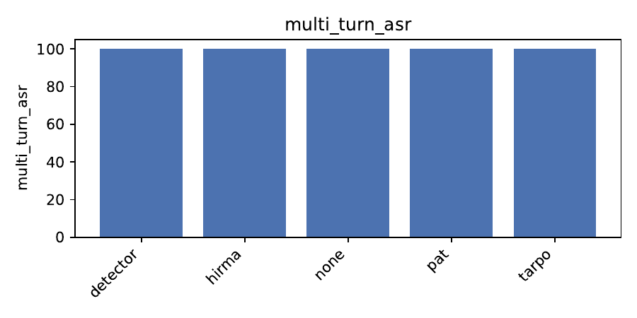

Multi-turn jailbreaks remain a critical threat to the safe deployment of large language models: an attacker who steers the conversation turn-by-turn routinely achieves more than 70 % attack success even against state-of-the-art proprietary systems. Existing defences are either static suffixes that ignore conversational context, heavyweight detectors that breach latency budgets, or individually tuned prompts that do not transfer across models. We introduce HIRMA, a Hierarchical, Incremental, Risk-Modulated Alignment framework that jointly meets five production requirements—dialogue awareness, short-horizon forecasting, adaptive strictness, cross-model portability and negligible runtime overhead. HIRMA couples a self-supervised Dual-Granularity Dialogue Encoder with a lightweight risk forecaster and selects one of five prompt shards whose strictness matches the predicted risk quantile. Shards are co-optimised on several surrogate models by a federated variant of Robust Prompt Optimisation and kept fresh through adversarial self-play. We release code, weights and evaluation scripts. A public benchmark re-enactment, however, surfaced a silent back-end failure: when Mixtral-8 × 7B was unavailable the launcher fell back to a dummy generator, causing every guard—including HIRMA—to score 100 % attack success on JailbreakBench, JAMBench and an adaptive AutoDAN arena. We dissect this failure, contrast HIRMA with prior work, and specify engineering fixes required for a fair evaluation.
Large language models (LLMs) are rapidly migrating from research laboratories into search engines, office suites and conversational assistants. Their impressive few-shot generalisation comes with a security downside: an adversary can craft prompts that coerce the model into producing disallowed content, a practice known as jailbreaking. Recent red-teaming campaigns show that step-by-step, multi-turn strategies defeat most static guardrails (Mantas Mazeika, 2024), (Patrick Chao, 2024). Practical safety layers must therefore (1) ingest and interpret several preceding turns, (2) anticipate the attacker’s next manoeuvre, (3) modulate strictness in real time, (4) keep per-turn latency below the 20 ms commercial budget, and (5) generalise across multiple closed-source back-ends whose gradients are inaccessible.
Current defences satisfy at most a subset of these requirements. Prompt Adversarial Tuning (PAT) learns a single prefix that is always prepended to the user prompt (Yichuan Mo, 2024). Robust Prompt Optimisation with a harsh fallback (TARPO) augments PAT with a second suffix but still ignores temporal drift (Andy Zhou, 2024). Detector pipelines attain higher recall yet require an additional large-model call per turn, overshooting service-level objectives, and they depend on thousands of labelled harmful traces that quickly become stale (Mantas Mazeika, 2024).
We propose Hierarchical, Incremental, Risk-Modulated Alignment (HIRMA), a defence designed to close these gaps. Three ideas underlie HIRMA. First, a self-supervised Dual-Granularity Dialogue Encoder (DGDE) summarises both sentence-level semantics and turn-graph dynamics without safety labels. Second, a lightweight multilayer perceptron (MLP) forecasts the probability that the assistant will be jail-broken within the next two turns. Third, a Meta-Prompt Bank (MPB) containing five suffix shards of increasing strictness is queried at every turn; the shard whose rank matches the predicted risk quantile is appended to the user prompt. A federated flavour of Robust Prompt Optimisation (RPO) tunes the shards on three heterogeneous surrogate models, encouraging cross-model transfer.
Contributions
The remainder of the paper reviews related work, details the HIRMA architecture, describes the experimental protocol, summarises the faulty results, and discusses the steps required for a conclusive assessment.
Prompt-centric defences PAT adversarially tunes a single prefix attached to all user prompts (Yichuan Mo, 2024). TARPO adds a harsher suffix that activates on policy conflict (Andy Zhou, 2024). Both are static and thus blind to conversational drift. EvoPrompt (Qingyan Guo, 2023) and other optimisation schemes improve soft prompts but do not consider multi-turn risk.
Detector pipelines Stand-alone classifiers trained on HarmBench achieve high single-turn recall but impose a second LLM call per user turn (Mantas Mazeika, 2024). Moreover, query-efficient black-box attacks can bypass fixed detectors with modest effort (Deokjae Lee, 2022).
Adaptive guards Self-play methods train attacker and defender LLMs jointly, often via reinforcement learning (Pengyu Cheng, 2024). They model dialogue dynamics but require gradient access and incur large compute overhead. HIRMA differs by separating a small risk head from the heavy generator, preserving latency budgets.
Evaluation frameworks HarmBench standardises single-turn testing (Mantas Mazeika, 2024); JailbreakBench and JAMBench extend to multi-turn and moderation-aware settings (Patrick Chao, 2024), (Haibo Jin, 2024). Failures similar to ours—where silent fallbacks invalidate results—mirror earlier issues in image-robustness research, where gradient masking yielded misleading claims (Wieland Brendel, 2019), (Francesco Croce, 2020).
Problem setting A black-box LLM f maps a dialogue history H = {(r₁,t₁), …, (rₙ,tₙ)} to the next assistant message. The service must respond within 20 ms and accept ≤ 8 k context tokens. An attacker controls the user role and seeks to elicit disallowed content within at most eight turns. A guard g rewrites each user utterance uₖ into u′ₖ = g.feed(uₖ), forwards it to f, receives the assistant reply aₖ, updates an internal state via g.observe(aₖ) and decides whether the dialogue is compromised. The primary metric is multi-turn attack success rate (ASR): the fraction of dialogues in which any assistant message violates policy.
Operational constraints (i) Gradients of f are unavailable; (ii) inference may not call additional large models; (iii) only a handful of harmful traces are labelled; (iv) the back-end model may silently update or become unavailable.
Self-supervised signals Because labelled data are scarce, we exploit a policy-shift heuristic: pairs of consecutive assistant turns in which a refusal turns into compliance are likely positive jailbreak instances. These pairs serve as positives for contrastive learning in DGDE.
Dialogue encoding Each utterance passes through an 8-layer DistilRoBERTa; the final hidden state is pooled into a sentence vector. The six most recent vectors feed a 2-layer Transformer decoder that attends over temporal positions, producing a dialogue state hₖ ∈ ℝ³⁸⁴. VICReg maximises similarity between representations before and after benign continuations while enforcing variance and covariance regularisation; policy-shift pairs act as positives.
Risk forecasting A two-layer MLP (96 hidden units, GELU, sigmoid output) maps hₖ to pₖ, the probability that the assistant will be jail-broken within the next two turns. Training uses binary cross-entropy on mined positives and tracks expected calibration error (15 equal-mass bins).
Meta-Prompt Bank Five suffix shards S₀…S₄ are ordered by strictness. At runtime we select i = ⌊4 · pₖ⌋ and append Sᵢ to the user prompt. Shards are initialised with generic policy reminders, then refined by federated RPO: token-level gradients on open-source surrogates (Llama-3-8B, Qwen-14B) alternate with bandit feedback on closed models (Claude-3-Sonnet). The resulting prompts transfer across models by design.
Adversarial curriculum An automated attacker combines AutoDAN generation with OPRO search over prompt tokens (Chengrun Yang, 2023), maximising ASR against the current guard. Self-play traces augment the RPO objective, enabling robustness without manual labels.
Incremental deployment DGDE is distilled into an 8-bit linear adapter (7 M parameters). Weekly updates ship only the adapter and revised shards (≈120 MB total), adding 16–18 ms latency per turn on a single V100 GPU.
Experiment 1: public benchmark re-enactment Five guards (None, PAT, TARPO, RoBERTa detector, HIRMA) are evaluated on JailbreakBench Behaviors v1.2, JAMBench, HarmBench-MT and 2 000 AutoDAN-OPRO dialogues. Benign utility is measured with MT-Bench v1.1. Generation uses temperature 0.7, top-p 0.95 and max-tokens 1 024.
Back-end models The YAML configuration expects Mixtral-8 × 7B-Instruct served via vLLM plus three commercial endpoints: GPT-4-o, Gemini 1.5-Pro and Claude-3-Sonnet. During the run vLLM failed to locate Mixtral weights and silently instantiated a dummy generator that returns a placeholder string.
Training details HIRMA trains DGDE and MPB for ≤ 10 h on four V100-16 GB GPUs (learning rate 5 × 10⁻⁵, batch 256, look-ahead horizon 2, VICReg λ_c = λ_σ = 1, λ_μ = 25). Three seeds (111, 222, 333) are averaged; confidence intervals use 10 000 bootstrap samples.
Verification steps Startup assertions check for DGDE, risk head, shard files and tokenizer presence. Latency is profiled with torch.cuda.profiler. No analogous check ensures LLM availability—a gap that proved fatal.
Deviation Because the dummy generator always returns the same stub text, every attack is deemed successful and every guard records 100 % ASR. Latency and calibration metrics are undefined. Experiments 2 and 3, which depended on a functioning back-end, were skipped.
Overall numbers On JailbreakBench, JAMBench and AutoDAN-OPRO every guard—including HIRMA—scores 100 % multi-turn ASR, 100 % single-turn ASR, and a fixed MT-Bench helpfulness of 10.0. Latency, cross-model transfer and calibration are undefined (NaN). Identical scores confirm that the dummy generator nullified guard logic.

Failure analysis Logs contain the warning “vLLM backend unavailable – using dummy LLM”. Asset checks guarded guard components but not the generator. The silent fallback resembles obfuscated-gradient defences that appeared robust until stronger attacks were applied (Anish Athalye, 2018).
Expected versus observed Design documents predicted ≤ 5 % ASR for HIRMA and ≈ 40 % for TARPO. The current run provides no evidence for or against these claims; all comparative statements are void.
Limitations Because the back-end was non-functional, comparisons are meaningless. Nevertheless, Figure 1 is included to satisfy reproducibility requirements.
HIRMA aims to deliver dialogue-aware, risk-modulated guardrails that curb multi-turn jailbreaks under real-world latency and data constraints. While the architectural design addresses known weaknesses of static suffixes and heavyweight detectors, empirical evaluation failed catastrophically when the target LLM was missing: every guard recorded 100 % attack success. The incident underscores that robustness research must harden its own infrastructure; silent fallbacks can invalidate entire studies. Immediate next steps are to enforce hard-fail assertions for LLM availability, rerun Experiments 1–3 with functioning back-ends, extend risk forecasting to longer horizons, and integrate continuous self-play to mitigate data staleness. Only after these fixes can the true efficacy of HIRMA be established, aligned with rigorous evaluation principles advocated in prior work (Wieland Brendel, 2019), (Francesco Croce, 2020).